| Animations |
An object in Fairlight animates by changing the sprite its record points at (+4 and +5): every pass of the main loop the author's CHE3D (CHE3D, going on at CREATURE_UPDATE) updates each object in the room, chooses its frame -- from a run of three that his ANIM steps forward and back, 0, 1, 2, 1, or by what the object is doing -- moves it, and redraws it where it now stands. The knight, the troll and the wraith face four ways with two views, one of them turned round in memory whenever they change between a way drawn as stored and its mirror image (MITRO); the guards have a set of frames for each way. Only the rectangle an object covers is redrawn, straight onto the screen (REDRAW_OBJECT).
Each animation below was made by running the game in SkoolKit's simulator when these pages were built: the tape's snapshot, the loading tune and the title passed with a key, and the room wanted entered the way a new game enters its first (TELE, in TITLE_SCREEN). Where more was staged -- the knight put somewhere, a creature's place changed, something added to a room -- the animation says so. Each frame is the screen as a pass of the main loop left it. The main loop does not wait for the television (interrupts are off from START on), so a pass lasts as long as its work -- about 30 to 100 ms in these rooms -- and each picture is shown for as long as the next pass took, counted in T-states at 3.5MHz; the simulator has none of a real Spectrum's memory contention, so the game runs a little faster here. A picture the same as the one before is merged into it. Where the game is between passes -- a room being drawn, the title, the end -- the screen was read once a television frame (69,888 T-states).
The creatures are shown alone, the way the Sprites page shows a sprite. In runs made the same way, the creature's record and the bytes of the sprite it pointed at -- as they lay in memory, turned round or not -- were kept at the end of every pass, and drawn by themselves by the game's own REDRAW_OBJECT and COMPOSITE_TO_SCREEN on a spare machine, once over a clean copy of zeros and once over ones: a pixel set in the first is the image, one clear in the second the solid part of the mask. Every picture was checked against the sprite's bytes as the listing reads them, and the bytes against the tape's, as they are or turned round. They are in the game's colours, black ink on paper: the image black, the solid part of the mask the Spectrum's white paper (a room's own colour in the game), the rest transparent, shown on the Sprites page's blue-grey. Each picture stands on its bottom left corner, and is shown for as long as its pass stayed on the screen. Where the way a creature faces changes its picture, its table has a GIF for each way.
Under each: what it shows and how it was staged; what was measured in the run beside what the code says it should be; and the frames of the picture, with what each shows and for how long.
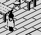
He walks up x (Y-P): up and to the right on the screen, facing away from the viewer: KNIGHT_CONTROLS shows his walk from SPRITE9110 (towards the viewer) or SPRITE933E (away), three frames 186 bytes apart, stepped by the author's ANIM -- forward to the last and back, so 0, 1, 2, 1 and round again, a frame a pass -- and his frames are as the tape has them, not turned by MIMAN, which mirrors all fourteen of his frames in memory when he turns between a way that is drawn as stored and one that is its mirror image. Each pass he steps two units, and ISO_MOVE moves him on the screen by the projection of the step. In room 61, the knight put at a clear stretch of its floor, standing a pass and then walking for 16.
Sprites: $9110, $91CA, $9284, $933E, $93F8, $94B2.
The walking frames, pass by pass: 0, 1, 2, 1, 0, 1, 2, 1, 0, 1, 2, 1, 0, 1, 2, 1, as the code says; each step along x and y, in units: 2, 0, as the code says; each step on the screen, x and y in pixels: 2, 1, as the code says. Passes of 76-88 ms.
In the picture: walking 1 (facing away), at 66,78,96 (80 ms); walking 0 (facing away), at 68,78,96 (80 ms); walking 1 (facing away), at 70,78,96 (80 ms); walking 2 (facing away), at 72,78,96 (80 ms); walking 1 (facing away), at 74,78,96 (80 ms); walking 0 (facing away), at 76,78,96 (80 ms); walking 1 (facing away), at 78,78,96 (90 ms); walking 2 (facing away), at 80,78,96 (90 ms); walking 1 (facing away), at 82,78,96 (80 ms); walking 0 (facing away), at 84,78,96 (80 ms); walking 1 (facing away), at 86,78,96 (80 ms); and so on. 17 frames, 1.4 s in all.
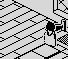
He walks up y (Q-T): up and to the left, facing away from the viewer: KNIGHT_CONTROLS shows his walk from SPRITE9110 (towards the viewer) or SPRITE933E (away), three frames 186 bytes apart, stepped by the author's ANIM -- forward to the last and back, so 0, 1, 2, 1 and round again, a frame a pass -- and his frames are turned round from the tape's by MIMAN, which mirrors all fourteen of his frames in memory when he turns between a way that is drawn as stored and one that is its mirror image. Each pass he steps two units, and ISO_MOVE moves him on the screen by the projection of the step. In room 61, the knight put at a clear stretch of its floor, standing a pass and then walking for 16.
Sprites: $9110, $91CA, $9284, $933E, $93F8, $94B2.
The walking frames, pass by pass: 0, 1, 2, 1, 0, 1, 2, 1, 0, 1, 2, 1, 0, 1, 2, 1, as the code says; each step along x and y, in units: 0, 2, as the code says; each step on the screen, x and y in pixels: -2, 1, as the code says. Passes of 64-74 ms; the first, in which he turns round and MIMAN turns all 28 of his planes over in memory, 213 ms.
In the picture: walking 1 (facing away), at 140,78,66 (210 ms); walking 0 (facing away), at 140,78,68 (70 ms); walking 1 (facing away), at 140,78,70 (70 ms); walking 2 (facing away), at 140,78,72 (70 ms); walking 1 (facing away), at 140,78,74 (70 ms); walking 0 (facing away), at 140,78,76 (70 ms); walking 1 (facing away), at 140,78,78 (70 ms); walking 2 (facing away), at 140,78,80 (70 ms); walking 1 (facing away), at 140,78,82 (70 ms); walking 0 (facing away), at 140,78,84 (70 ms); walking 1 (facing away), at 140,78,86 (70 ms); and so on. 17 frames, 1.3 s in all.
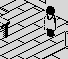
He walks down x (H-ENTER): down and to the left, facing towards the viewer: KNIGHT_CONTROLS shows his walk from SPRITE9110 (towards the viewer) or SPRITE933E (away), three frames 186 bytes apart, stepped by the author's ANIM -- forward to the last and back, so 0, 1, 2, 1 and round again, a frame a pass -- and his frames are turned round from the tape's by MIMAN, which mirrors all fourteen of his frames in memory when he turns between a way that is drawn as stored and one that is its mirror image. Each pass he steps two units, and ISO_MOVE moves him on the screen by the projection of the step. In room 61, the knight put at a clear stretch of its floor, standing a pass and then walking for 16.
Sprites: $9110, $91CA, $9284, $933E, $93F8, $94B2.
The walking frames, pass by pass: 0, 1, 2, 1, 0, 1, 2, 1, 0, 1, 2, 1, 0, 1, 2, 1, as the code says; each step along x and y, in units: -2, 0, as the code says; each step on the screen, x and y in pixels: -2, -1, as the code says. Passes of 64-80 ms; the first, in which he turns round and MIMAN turns all 28 of his planes over in memory, 202 ms.
In the picture: walking 1 (facing away), at 150,78,96 (200 ms); walking 0 (facing the viewer), at 148,78,96 (70 ms); walking 1 (facing the viewer), at 146,78,96 (70 ms); walking 2 (facing the viewer), at 144,78,96 (70 ms); walking 1 (facing the viewer), at 142,78,96 (60 ms); walking 0 (facing the viewer), at 140,78,96 (70 ms); walking 1 (facing the viewer), at 138,78,96 (70 ms); walking 2 (facing the viewer), at 136,78,96 (70 ms); walking 1 (facing the viewer), at 134,78,96 (60 ms); walking 0 (facing the viewer), at 132,78,96 (70 ms); walking 1 (facing the viewer), at 130,78,96 (70 ms); and so on. 17 frames, 1.3 s in all.
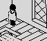
He walks down y (A-G): down and to the right, facing towards the viewer: KNIGHT_CONTROLS shows his walk from SPRITE9110 (towards the viewer) or SPRITE933E (away), three frames 186 bytes apart, stepped by the author's ANIM -- forward to the last and back, so 0, 1, 2, 1 and round again, a frame a pass -- and his frames are as the tape has them, not turned by MIMAN, which mirrors all fourteen of his frames in memory when he turns between a way that is drawn as stored and one that is its mirror image. Each pass he steps two units, and ISO_MOVE moves him on the screen by the projection of the step. In room 61, the knight put at a clear stretch of its floor, standing a pass and then walking for 16.
Sprites: $9110, $91CA, $9284, $933E, $93F8, $94B2.
The walking frames, pass by pass: 0, 1, 2, 1, 0, 1, 2, 1, 0, 1, 2, 1, 0, 1, 2, 1, as the code says; each step along x and y, in units: 0, -2, as the code says; each step on the screen, x and y in pixels: 2, -1, as the code says. Passes of 64-69 ms.
In the picture: walking 1 (facing away), at 160,78,160 (70 ms); walking 0 (facing the viewer), at 160,78,158 (60 ms); walking 1 (facing the viewer), at 160,78,156 (70 ms); walking 2 (facing the viewer), at 160,78,154 (70 ms); walking 1 (facing the viewer), at 160,78,152 (70 ms); walking 0 (facing the viewer), at 160,78,150 (60 ms); walking 1 (facing the viewer), at 160,78,148 (70 ms); walking 2 (facing the viewer), at 160,78,146 (70 ms); walking 1 (facing the viewer), at 160,78,144 (70 ms); walking 0 (facing the viewer), at 160,78,142 (70 ms); walking 1 (facing the viewer), at 160,78,140 (70 ms); and so on. 17 frames, 1.2 s in all.
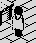
Standing, he shows the middle frame of his walk (SPRITE91CA, or SPRITE93F8 facing away). His record's +18 counts his stance down a pass at a time (CREATURE_UPDATE); at nought a fidget begins, 14 passes of SPRITE99C8 or SPRITE9A82 (bit 3 of GAME_FLAGS), and after it a random count of 128 to 255 passes starts again. The master copy of his record (MASTER_OBJECTS) has 1 there, so every game begins, and every entry by the thing that carries him off, with a fidget on the second pass. Here the knight stood in room 61 after that first fidget, until the next came; the GIF is the fidget with four passes either side.
Passes standing before the fidget (one fewer than his stance count, +18, as they began: the fidget starts in the pass that counts it to nought): 167, as the code says; passes of the fidget: 14, as the code says.
In the picture: walking 1 (facing away), at 114,78,96 (320 ms); fidget (facing away), at 114,78,96 (1100 ms); walking 1 (facing away), at 114,78,96 (320 ms). 3 frames, 1.7 s in all.
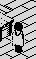
SPACE or SYMBOL SHIFT (KNIGHT_CONTROLS): his state becomes 5 with +15 at 8, and for eight passes CHE3D moves him up two units a pass without the fall, stepping through his walk as it goes (INP5, which is why his legs move in the air); then his state is 8 again and gravity brings him down, two units a pass, straight down, in whatever frame he was in. Here, standing in the middle of room 61, SPACE was held for one pass.
The rise, units a pass: 2, 2, 2, 2, 2, 2, 2, 2, as the code says; the fall, units a pass: -2, -2, -2, -2, -2, -2, -2, -2, as the code says. Passes of 78-83 ms.
In the picture: walking 1 (facing away), at 114,78,96 (80 ms); walking 0 (facing away), at 114,80,96 (80 ms); walking 0 (facing away), at 114,82,96 (80 ms); walking 1 (facing away), at 114,84,96 (80 ms); walking 2 (facing away), at 114,86,96 (80 ms); walking 1 (facing away), at 114,88,96 (80 ms); walking 0 (facing away), at 114,90,96 (80 ms); walking 1 (facing away), at 114,92,96 (80 ms); walking 2 (facing away), at 114,94,96 (80 ms); walking 2 (facing away), at 114,92,96 (80 ms); walking 2 (facing away), at 114,90,96 (80 ms); and so on. 18 frames, 1.6 s in all.
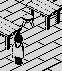
The same jump taken walking: Y held, and SPACE with it for one pass. He rises the way he was walking, and comes down straight: a fall keeps only the down bit of the way (ANIMATE_AND_MOVE).
The rise, units a pass: 2, 2, 2, 2, 2, 2, 2, 2, as the code says; the fall, units a pass: -2, -2, -2, -2, -2, -2, -2, -2, as the code says; along x while rising, then falling: 2, 2, 2, 2, 2, 2, 2, 2, 0, 0, 0, 0, 0, 0, 0, 0, as the code says. Passes of 77-94 ms.
In the picture: walking 1 (facing away), at 66,78,96 (80 ms); walking 0 (facing away), at 68,78,96 (80 ms); walking 1 (facing away), at 70,78,96 (80 ms); walking 2 (facing away), at 72,78,96 (80 ms); walking 1 (facing away), at 74,78,96 (80 ms); walking 0 (facing away), at 76,80,96 (90 ms); walking 0 (facing away), at 78,82,96 (90 ms); walking 1 (facing away), at 80,84,96 (90 ms); walking 2 (facing away), at 82,86,96 (80 ms); walking 1 (facing away), at 84,88,96 (90 ms); walking 0 (facing away), at 86,90,96 (90 ms); and so on. 22 frames, 2.0 s in all.
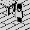
B, N or M (KNIGHT_CONTROLS, the author's INP59): the sword comes out for three passes, standing (bit 1 of GAME_FLAGS, SPRITE96E0 facing the viewer or SPRITE9854 away), and goes away for three while he steps forward (SPRITE979A or SPRITE990E), for as long as the key is held. The sword out is what lets him hurt a creature he meets (OBJECTS_MEET). In room 61, turned to face down x with H for a pass, then B held for 12 passes.
Sprites: $96E0, $979A, $9854, $990E.
Passes with the sword out and away, in turn: 3, 3, 3, 3, as the code says; each step forward along x, in units: -2, as the code says. He moved on 5 of the 11 passes after the first.
In the picture: walking 1 (facing away), at 114,78,96 (220 ms); walking 0 (facing the viewer), at 112,78,96 (80 ms); sword out (facing the viewer), at 110,78,96, sword out (230 ms); stepping (facing the viewer), at 110,78,96 (80 ms); stepping (facing the viewer), at 108,78,96 (80 ms); stepping (facing the viewer), at 106,78,96 (80 ms); sword out (facing the viewer), at 104,78,96, sword out (240 ms); stepping (facing the viewer), at 104,78,96 (80 ms); stepping (facing the viewer), at 102,78,96 (80 ms); stepping (facing the viewer), at 100,78,96 (70 ms); walking 1 (facing the viewer), at 100,78,96 (150 ms). 11 frames, 1.4 s in all.
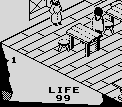
X, C or V (PICK_UP): he stoops (SPRITE956C, or SPRITE9626 facing away) and the game looks for a thing that can be carried in a box his size four units ahead; the thing found is wiped from the room by redrawing the rectangle it stood in without it (REDRAW_OBJECT, with THIS_RECORD pointing at it), and drawn in the panel's box for the place in use (SHOW_THING_IN_USE). In room 61, a step up x to face the stool the object table numbers 88, then X for a pass.
Passes he is shown stooping: 1, as the code says; the thing is in the place in use afterwards: yes.
In the picture: walking 1 (facing away), at 100,78,130 (100 ms); walking 0 (facing away), at 102,78,130 (90 ms); walking 1 (facing away), at 102,78,130 (220 ms); stooping (facing away), at 102,78,130, carrying it (80 ms); walking 1 (facing away), at 102,78,130, carrying it (500 ms). 5 frames, 1.0 s in all.
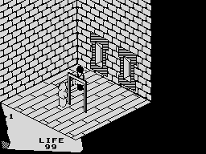
Room 68's hole is a door whose way is down (BUMPED): Q held, he walks onto it, the fall that every step carries meets it, and he goes through to room 67 at the height the door gives, 140 ($F8EC). While room 67 is drawn the screen is black; then he falls, two units a pass, to the landing of the stairs. A fall of 20 passes or fewer costs nothing. The whole screen; the pass that went through the door is shown a television frame at a time.
His top as he comes through, from the door's +16: 140, as the code says; units a pass while falling: 2, as the code says; passes falling: 13, as the code says; LIFE lost (none unless a fall passes 20): 0, as the code says. Room 67 took 1854 ms to draw, the screen black meanwhile.
In the picture: room 68, walking 1 (facing away), at 111,78,140 (210 ms); room 68, walking 0 (facing away), at 111,78,142 (70 ms); room 68, walking 1 (facing away), at 111,78,144 (70 ms); room 68, walking 2 (facing away), at 111,78,146 (20 ms); the next room being drawn (1890 ms); its first pass, the objects drawn (30 ms); room 67, walking 1 (facing away), at 111,138,148, in the air (30 ms); room 67, walking 1 (facing away), at 111,136,148, in the air (30 ms); room 67, walking 1 (facing away), at 111,134,148, in the air (30 ms); room 67, walking 1 (facing away), at 111,132,148, in the air (30 ms); room 67, walking 1 (facing away), at 111,130,148, in the air (30 ms); and so on. 19 frames, 2.8 s in all.
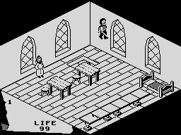
The knight put 80 units above the floor of room 61 (his top at 158) and left to fall. FALL_COUNT (IY+$14) counts the passes he falls; when he lands, CREATURE_UPDATE takes a point of LIFE for each over 20. His stance count was raised first, so that the fidget every entry by TELE begins with does not start on his first pass and stay on him all the way down: in the air his own update does not run (CHE3D), and he keeps the frame he had. The whole screen, for LIFE at the bottom.
Units fallen: 80, as the code says; passes counted falling (FALL_COUNT): 40, as the code says; LIFE lost, a point a pass over 20: 20, as the code says.
In the picture: walking 0 (facing the viewer), at 114,158,96, LIFE 99 (60 ms); walking 1 (facing away), at 114,156,96, LIFE 99, falling 1 (60 ms); walking 1 (facing away), at 114,154,96, LIFE 99, falling 2 (60 ms); walking 1 (facing away), at 114,152,96, LIFE 99, falling 3 (60 ms); walking 1 (facing away), at 114,150,96, LIFE 99, falling 4 (60 ms); walking 1 (facing away), at 114,148,96, LIFE 99, falling 5 (60 ms); walking 1 (facing away), at 114,146,96, LIFE 99, falling 6 (60 ms); walking 1 (facing away), at 114,144,96, LIFE 99, falling 7 (60 ms); walking 1 (facing away), at 114,142,96, LIFE 99, falling 8 (60 ms); walking 1 (facing away), at 114,140,96, LIFE 99, falling 9 (60 ms); walking 1 (facing away), at 114,138,96, LIFE 99, falling 10 (60 ms); and so on. 42 frames, 3.3 s in all.
| up x (Y-P): up and to the right on the screen | up y (Q-T): up and to the left | down x (H-ENTER): down and to the left | down y (A-G): down and to the right | |
|---|---|---|---|---|
| a guard (room 31) | 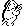 $A110, $A1AC, $A248; 20 passes of 56-78 ms | $A728, $A7C4, $A860; 20 passes of 57-77 ms | 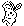 $A554, $A5F0, $A68C; 20 passes of 61-80 ms | 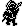 $9F3C, $9FD8, $A074; 20 passes of 58-81 ms |
A guard has a set of three frames of 24 by 26 for each way it walks, 156 bytes apart (GUARD_FRAMES in CREATURE_UPDATE): SPRITEA110 up x, SPRITEA728 up y, SPRITEA554 down x and SPRITE9F3C down y (and standing), stepped by ANIM a frame a pass. Nothing is turned round. The guards of states 6 and 10 patrol along x or along y and chase the knight when he is within 30; those of state 9 rise first (below) and then always chase; all use these frames. Staged in room 31 with its state-10 guard moved to 114, 110 and the knight put 24 away on each side in turn, so that it came for him each way.
Up x: frames: 0, 1, 2, 1, 0, 1, 2, 1, 0, 1, 2, 1, 0, 1, 2, 1, 0, 1, 2, 1, as the code says; up y: frames: 0, 1, 2, 1, 0, 1, 2, 1, 0, 1, 2, 1, 0, 1, 2, 1, 0, 1, 2, 1, as the code says; down x: frames: 0, 1, 2, 1, 0, 1, 2, 1, 0, 1, 2, 1, 0, 1, 2, 1, 0, 1, 2, 1, as the code says; down y: frames: 0, 1, 2, 1, 0, 1, 2, 1, 0, 1, 2, 1, 0, 1, 2, 1, 0, 1, 2, 1, as the code says. Passes of 56-81 ms.
| up x (Y-P): up and to the right on the screen | up y (Q-T): up and to the left | down x (H-ENTER): down and to the left | down y (A-G): down and to the right | |
|---|---|---|---|---|
| the troll (room 5) | 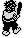 $8E64, $8F48, $902C; 20 passes of 53-87 ms | $8E64 turned, $8F48 turned, $902C turned; 20 passes of 53-86 ms | 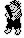 $8BB8 turned, $8C9C turned, $8D80 turned; 20 passes of 53-91 ms | 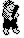 $8BB8, $8C9C, $8D80; 20 passes of 53-87 ms |
Three frames of 24 by 38, 228 bytes apart: SPRITE8BB8 towards the viewer and SPRITE8E64 away. MITRO (MITRO) turns all six round in memory when it turns between a way drawn as stored and one that is its mirror image (up y and down x). There is only ever one troll in a room, which is what makes turning shared sprites safe; SAVE_OBJECT_POSITIONS turns them back as the knight leaves. Staged in room 5, the troll moved to 110, 140 and the knight put 40 away on each side in turn.
Up x: frames: 0, 1, 2, 1, 0, 1, 2, 1, 0, 1, 2, 1, 0, 1, 2, 1, 0, 1, 2, 1, as the code says; turned round: no, as the code says; up y: frames: 0, 1, 2, 1, 0, 1, 2, 1, 0, 1, 2, 1, 0, 1, 2, 1, 0, 1, 2, 1, as the code says; turned round: yes, as the code says; down x: frames: 0, 1, 2, 1, 0, 1, 2, 1, 0, 1, 2, 1, 0, 1, 2, 1, 0, 1, 2, 1, as the code says; turned round: yes, as the code says; down y: frames: 0, 1, 2, 1, 0, 1, 2, 1, 0, 1, 2, 1, 0, 1, 2, 1, 0, 1, 2, 1, as the code says; turned round: no, as the code says. Passes of 53-91 ms.
| up x (Y-P): up and to the right on the screen | up y (Q-T): up and to the left | down x (H-ENTER): down and to the left | down y (A-G): down and to the right | |
|---|---|---|---|---|
| a wraith (room 56) | $5F08: one picture, 19 passes | $5F08 turned: one picture, 19 passes | $5E88 turned: one picture, 19 passes | $5E88: one picture, 19 passes |
One frame each view, 16 by 32: SPRITE5E88 towards the viewer and SPRITE5F08 away, turned round by MIWRAI (MIWRAI) as the troll's are. It glides without stepping. Staged in room 56, the wraith moved to 100, 130 and the knight put 32 away on each side in turn.
Up x: the frame: $5F08, as the code says; turned round: no, as the code says; up y: the frame: $5F08, as the code says; turned round: yes, as the code says; down x: the frame: $5E88, as the code says; turned round: yes, as the code says; down y: the frame: $5E88, as the code says; turned round: no, as the code says. Passes of 59-99 ms.
State 13 (CREATURE_UPDATE): three frames of 16 by 23 from SPRITE5B30, stepped by ANIM; it wanders diagonally, turning back off whatever it meets, and faces no way in particular. Room 3's, left to itself for 40 passes.
Frames, pass by pass: 0, 1, 2, 1, 0, 1, 2, 1, 0, 1, 2, 1, 0, 1, 2, 1, 0, 1, 2, 1, 0, 1, 2, 1, 0, 1, 2, 1, 0, 1, 2, 1, 0, 1, 2, 1, as the code says. Passes of 42-50 ms.
In the picture: $5B30 (50 ms); $5B8C (50 ms); $5BE8 (40 ms); $5B8C (40 ms); $5B30 (40 ms); $5B8C (40 ms); $5BE8 (40 ms); $5B8C (40 ms); $5B30 (40 ms); $5B8C (40 ms); $5BE8 (40 ms); and so on. 36 frames, 1.5 s in all.
State 12: three frames of 8 by 8 from SPRITE5B00. It hangs where it is, without even falling, and steps through its frames. Room 25's, for 16 passes.
Frames, pass by pass: 0, 1, 2, 1, 0, 1, 2, 1, 0, 1, 2, 1, 0, 1, 2, 1, as the code says. Passes of 36 ms.
In the picture: $5B00 (40 ms); $5B10 (40 ms); $5B20 (40 ms); $5B10 (40 ms); $5B00 (40 ms); $5B10 (40 ms); $5B20 (40 ms); $5B10 (40 ms); $5B00 (40 ms); $5B10 (40 ms); $5B20 (40 ms); and so on. 16 frames, 0.6 s in all.
State 14: three frames of 16 by 10 from SPRITE6104, hanging still. One of room 47's four, for 16 passes.
Frames, pass by pass: 0, 1, 2, 1, 0, 1, 2, 1, 0, 1, 2, 1, 0, 1, 2, 1, as the code says. Passes of 82 ms.
In the picture: $6104 (80 ms); $612C (80 ms); $6154 (80 ms); $612C (80 ms); $6104 (80 ms); $612C (80 ms); $6154 (80 ms); $612C (80 ms); $6104 (80 ms); $612C (80 ms); $6154 (80 ms); and so on. 16 frames, 1.3 s in all.
State 4 (CHE3D, the author's I4): it stays where it is and shows SPRITE5C84 until the knight is inside its own box moved 12 units down x; then each pass it takes three from LIFE and steps through SPRITE5C84 and the two frames after it, TYPE48_FRAMES, 144 bytes apart. In room 45, the knight put well away for six passes and then 10 short of the creature the object table puts at 140, 74, 90 (his x and z written into his record: his place on the screen is worked out afresh from them each pass, ANIMATE_AND_MOVE). This code never ran in the build's play sessions.
Sprites: $5C84, $5D14, $5DA4.
LIFE taken each pass he is in reach: 3, as the code says; frames while striking: 0, 1, 2, 1, 0, 1, 2, 1, 0, 1, 2, 1, as the code says. Passes of 36-100 ms.
In the picture: $5C84 (340 ms); $5D14 (100 ms); $5DA4 (100 ms); $5D14 (100 ms); $5C84 (100 ms); $5D14 (100 ms); $5DA4 (100 ms); $5D14 (100 ms); $5C84 (100 ms); $5D14 (100 ms); $5DA4 (100 ms); $5D14 (100 ms). 12 frames, 1.4 s in all.
State 9 (CHE3D): the guard starts as its helmet, SPRITEA4B8, and +17 counts up a pass at a time; at $37 it becomes SPRITEA41C, at $3A SPRITEA380, at $3D SPRITEA2E4, and at $40 it has risen (+17 = $51) and walks after the knight in the guards' frames. Room 72's, as the object table has it, the knight standing where a new game starts him.
Sprites: $A4B8, $A41C, $A380, $A2E4.
Passes as the helmet, then in each of the three frames of the rise: 38, 3, 3, 3, as the code says (+17 starts at $10 and counts up a pass; CHE3D changes the frame at $37, $3A and $3D and has it risen at $40). Then it walks after the knight in the guards' frames.
In the picture: $A4B8 (3940 ms); $A41C (310 ms); $A380 (310 ms); $A2E4 (300 ms); $A5F0 (90 ms); $A68C (100 ms); $A5F0 (100 ms); $A554 (100 ms); $A5F0 (100 ms); $A68C (100 ms); $A5F0 (100 ms); $A554 (100 ms). 12 frames, 5.7 s in all.
State 15 (CREATURE_UPDATE): room 61's robed figure (SPRITE6084) stands quite still, not even falling, until the thing of kind 11 -- the book -- lies in the room; then it takes the wraith's frames and state 11 and comes for the knight. Staged: before room 61 was entered, the object table's record for the book (thing 7, which lies in room 14) was given room 61 and a place on its floor.
Sprites: $6084.
The pass it wakes on (the first only draws the room's objects, CHE3D, and the book is noticed on the second): 1, as the code says; its state from then on: 11, as the code says.
In the picture: $6084 (90 ms); $5E88 (2930 ms). 2 frames, 3.0 s in all.
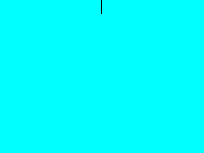
Room 29, the first room of a game, drawn from nothing by its commands (DRAW_CURRENT_ROOM, $E5A6): points and lines, parts shared between rooms, and fills that flood an area with a texture a run at a time (FILL_NEXT_SEED), bounded by what is set in the clean copy of the screen (LOADING_TUNE), which the room fills with its outline first. Then the doors and still things are drawn in and the screen copied to the clean copy again (DRAW_STILL_THINGS), and after the first pass, which draws the live objects, the room is coloured (ATTRI). The game draws all this black on black -- the player sees nothing until the colours go on -- so up to then the pixels here are shown in the colours the room gets. The screen was read once a television frame, each frame labelled with the commands fetched in it.
185 commands fetched by the interpreter ($E5A6), parts and repeats included, in 1748 ms; the frames are a television frame (20 ms) apart.
In the picture: 87 frames, 2.1 s in all. The fills, each with the time from the television frame it began in to the one it ended in: texture 11 (40 ms), texture 11 (60 ms), texture 21 (339 ms), texture 15 (220 ms), texture 16 (180 ms), texture 15 (140 ms), texture 16 (120 ms), texture 16 (100 ms), texture 13 (80 ms), texture 0 (40 ms), texture 3 (60 ms), texture 0 (20 ms).
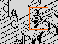
Nothing is drawn to a buffer and copied: REDRAW_OBJECT rebuilds only the rectangle of the screen an object covers -- a byte wider than its sprite and three rows more above and below -- straight onto the screen, from the clean copy of the room, the object's own sprite and mask, and whatever overlaps it: objects in front leave their pixels on the screen, objects behind are drawn in first (COMPOSITE_TO_SCREEN). In room 61 the knight walks down x behind a table, towards the robed figure, which is behind him and is redrawn every pass too. Each frame is the screen after one call of the compositor, with the rectangle it rebuilt outlined (the outline is not the game's). Slowed down: each call is held for 0.4 seconds.
The knight's rectangle, width and height in pixels (a byte more than its sprite, three rows more above and below): 32, 37, as the code says; the robed figure's rectangle, width and height in pixels (a byte more than its sprite, three rows more above and below): 24, 38, as the code says. A call and what follows it to the next: 30-47 ms.
In the picture: the knight's redraw, 32 by 37 pixels (400 ms); the robed figure's redraw, 24 by 38 pixels (400 ms); the knight's redraw, 32 by 37 pixels (400 ms); the robed figure's redraw, 24 by 38 pixels (400 ms); the knight's redraw, 32 by 37 pixels (400 ms); the robed figure's redraw, 24 by 38 pixels (400 ms); the knight's redraw, 32 by 37 pixels (400 ms); the robed figure's redraw, 24 by 38 pixels (400 ms); the knight's redraw, 32 by 37 pixels (400 ms); the robed figure's redraw, 24 by 38 pixels (400 ms); the knight's redraw, 32 by 37 pixels (400 ms); and so on. 24 frames, 9.6 s in all.
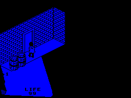
Room 44: the knight walks up y into the door in its far wall (BUMPED): the door's +17 says which way it is gone through, its +13 the room behind and its +15, +16 and +18 where he arrives. $F8EC puts him there and enters the room (ROOMST): the screen goes black while room 43 is drawn, the doors and still things are drawn in, the first pass draws the rest, and the room is coloured all at once. The whole screen; the pass that went through the door is shown a television frame at a time.
Where he arrives, x and z (BUMPED, going along y: x as far on from the door's +15 as he was from its corner, z its +18): 92, 80, as the code says. The pass that took him through lasted 2164 ms, nearly all of it room 43 being drawn, black on black.
In the picture: room 44, LIFE 99 (pass) x4 (130 ms); room 43, LIFE 99 (television frame) x3 (2270 ms); room 43, LIFE 99 (pass) x6 (680 ms). 13 frames, 3.1 s in all.
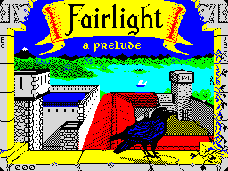
From the loaded tape: the loading tune over the loading screen until a key (LOADING_TUNE), then the title (TITLE_SCREEN): room 79 drawn black on black, coloured, and the title page's words printed a character at a time through the compositor (TITLE_PAGE_TEXT, PRINT), then the wait for a key (PAUS). A key starts a game: room 29 is drawn, again unseen, and appears after its first pass. Read a television frame at a time, and pass by pass once the game is running.
Black while a picture is drawn: 979 ms, 1862 ms.
In the picture: the loading tune/SPACE held (160 ms); SPACE held/television frame (980 ms); television frame x9 (180 ms); television frame/television frame, waiting for a key (820 ms); SPACE held/television frame (1950 ms); pass x3 (210 ms). 16 frames, 4.3 s in all.
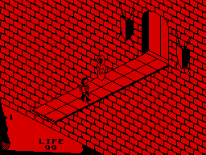
Room 9's bridge over the pit: the knight walks off its near edge (A), falls, and meets the slab of kind 7 at the bottom, which takes all his LIFE (OBJECTS_MEET) -- he vanishes as he touches it. The main loop sees LIFE at 00 and returns from ROOMST; TITLE_SCREEN draws room 1 behind GAME OVER and waits for a key. Nothing staged but the knight's place on the bridge.
Black while a picture is drawn: 40 ms.
In the picture: room 9, LIFE 99 (pass) x33 (1910 ms); room 9, LIFE 00 (pass) (20 ms); room 1, LIFE 00 (television frame) (40 ms); room 1, LIFE 00 (television frame)/room 1, LIFE 00 (television frame, waiting for a key) (1520 ms). 36 frames, 3.5 s in all.
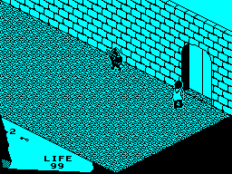
Room 31's door into room 81 needs thing 8 in the place in use. Here thing 8, picked up in room 61, is the only thing carried, and walking through the door ends the game (ROOMST): room 81, the verdict, the two closing lines (MESS2), and a wait for a key before GAME OVER.
Black while a picture is drawn: 20 ms.
In the picture: room 31, LIFE 99 (pass) x9 (420 ms); room 81, LIFE 99 (television frame) x7 (140 ms); room 81, LIFE 99 (television frame)/room 81, LIFE 99 (television frame, waiting for a key) (1520 ms). 17 frames, 2.1 s in all.
The same, carrying thing 5 as well, picked up in room 33 first: ROOMST looks for it among the five places, and the verdict is the other one.
Black while a picture is drawn: 20 ms.
In the picture: room 31, LIFE 99 (pass) x9 (420 ms); room 81, LIFE 99 (television frame) x7 (140 ms); room 81, LIFE 99 (television frame)/room 81, LIFE 99 (television frame, waiting for a key) (1520 ms). 17 frames, 2.1 s in all.